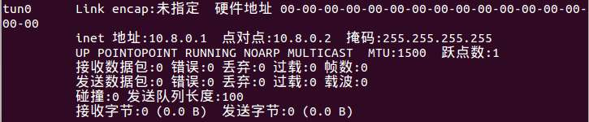
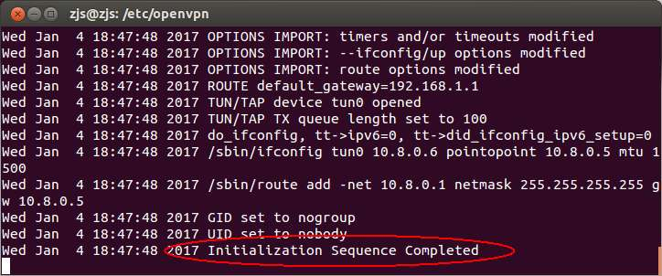
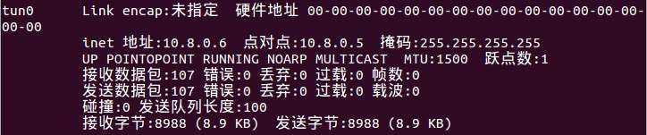

项目需要能够远程控制树莓派。说到远程控制，肯定想到ssh。但是呢，树莓派是用3G流量上网的，分配到的是内网IP地址。那么如何让另一个设备能够连接到处于内网的设备呢？我想到了VPN。在VPN中，所有设备都好像在一个局域网中，如果服务器适当配置一下，那么VPN客户端之间就能互相访问。
VPN有很多种，包括PPTP、IPSec、OpenVPN等等。PPTP的数据包特征太明显，在国内的网络环境中很可能直接被拦截掉了。另外，由于树莓派使用的是3G流量，其链路可能功能有限，IPSec使用的是Cisco自己设计的协议，可能会被丢弃（未考证）。综合考虑，还是OpenVPN功能最强大，因为它是基于TCP或者UDP的，而且数据包特征不太明显，另外可配置项也很多。
OpenVPN的配置还是比较复杂的，尤其是对于新手而言，如果一开始上来就是什么创建证书、公钥、密钥，会很打击信心。所以我决定先来一个最最简单的版本，然后循序渐进。
=================阶段一：服务器端最简配置===============
一、下载OpenVPN：
sudo apt-get install openvpn
二、证书、公钥、密钥和Diffie-Hellman参数 ：
OpenVPN服务器需要四个文件ca.crt、server.crt、server.key和dh1024.pem。这四个文件都与加密有关，具体含义我至今不太清楚。。。OpenVPN自带了示例文件。这四个文件分别可以如下获得：
ca.crt：
sudo cp /usr/share/doc/openvpn/examples/sample-keys/ca.crt /etc/openvpn
server.crt：
sudo gunzip -c /usr/share/doc/openvpn/examples/sample-keys/server.crt.gz > /tmp/server.crt sudo mv /tmp/server.crt /etc/openvpn/
server.key：
sudo cp /usr/share/doc/openvpn/examples/sample-keys/server.key /etc/openvpn/
dh1024.pem：
sudo cp /usr/share/doc/openvpn/examples/sample-keys/dh1024.pem /etc/openvpn
于是/etc/openvpn目录下就有这四个文件了。
三、编写服务器配置文件：
编写服务器端配置文件/etc/openvpn/server.conf，内容如下：
port 1194 proto udp dev tun ca ca.crt cert server.crt key server.key dh dh1024.pem server 10.8.0.0 255.255.255.0 keepalive 10 120 user nobody group nogroup persist-key persist-tun verb 3
其实该文件也可以由/usr/share/doc/openvpn/examples/sample-config-files/server.conf.gz解压得到。每一行具体的意思可以查看其中的注释。
四、启动OpenVPN服务器：
现在，/etc/openvpn目录下有5个文件：ca.crt、server.crt、server.key、dh1024.pem和server.conf。
cd /etc/openvpn sudo openvpn --config server.conf
执行该命令的窗口不能关闭（至少openvpn进程不能结束）。
此时，如果执行
ifconfig
可以看到一个tun0网络接口，IP地址是10.8.0.1：

这说明服务器启动成功。
=================阶段二：客户端最简配置================
一、下载OpenVPN：
sudo apt-get install openvpn
二、证书与密钥：
OpenVPN客户端需要3个文件：ca.crt、client.crt和client.key。为了保证一致性，最好从服务器上复制过来。这三个文件在服务器上可以如下获得：
ca.crt：
sudo cp /usr/share/doc/openvpn/examples/sample-keys/ca.crt ~
必须与服务器的ca.crt保持一致。
client.crt：
sudo gunzip -c /usr/share/doc/openvpn/examples/sample-keys/client.crt.gz > ~/client.crt
client.key：
sudo cp /usr/share/doc/openvpn/examples/sample-keys/client.key ~
把这三个文件拷贝到客户端的/etc/openvpn目录下。
三、编写客户端配置文件：
在客户端的/etc/openvpn下创建文件client.conf，编写内容如下：
client dev tun proto udp remote 192.168.1.100 1194 ca ca.crt cert client.crt key client.key user nobody group nogroup persist-key persist-tun verb 3
其中第4行的IP地址需要根据改为你的服务器的IP地址。
其实该文件也可以由/usr/share/doc/openvpn/examples/sample-config-files/client.conf得到。每一行具体的意思可以查看其中的注释。
现在，/etc/openvpn目录下有4个文件：ca.crt、client.crt、client.key和client.conf。
cd /etc/openvpn sudo openvpn --config client.conf
执行该命令的窗口不能关闭（至少openvpn进程不能结束）。
如果输出“Initialization Sequence Completed”字样，说明OpenVPN成功连接：

此时，如果执行
ifconfig
可以看到一个tun0网络接口，IP地址是10.8.0.6（也可能是别的）：

如果执行命令：
ping 10.8.0.1
能够ping通的话，那么说明OpenVPN连接成功了～
这么一来，“OpenVPN配置很复杂“的传说就被破除啦！！